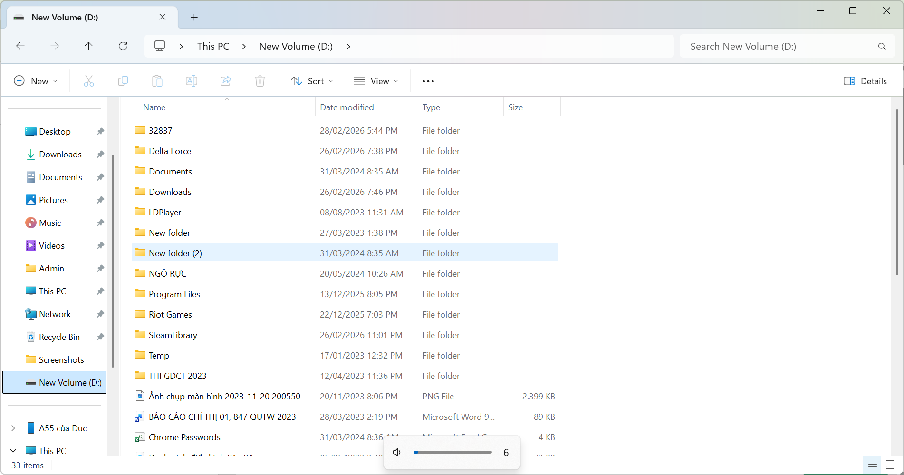

Bước 1 / 13
Tiêu đề ảnh
Mô tả chi tiết ảnh ở đây...
Xây dựng thói quen tổ chức tệp tin và thư mục khoa học, áp dụng vào môi trường học tập và dự án thực tế.
Nâng cao kỹ năng tìm kiếm, đánh giá và tổng hợp thông tin học thuật từ các nguồn tin cậy.
Sử dụng AI tạo sinh một cách thông minh, có trách nhiệm để hỗ trợ học tập và sáng tạo nội dung.
Thành thạo các công cụ làm việc nhóm trực tuyến, phối hợp hiệu quả trong môi trường học tập hiện đại.
Lưu trữ và trình bày các sản phẩm học tập theo chuẩn chuyên nghiệp để dễ dàng chia sẻ với nhà tuyển dụng.
Định hướng trở thành kỹ sư phần mềm có tư duy đạo đức, luôn cập nhật xu hướng công nghệ mới nhất.
Tổng hợp 6 bài tập thực hành – từ Bài 1 đến Bài 6 🌈
Thiết lập cấu trúc thư mục tối ưu để quản lý tài liệu học tập trên máy tính cá nhân, áp dụng quy tắc đặt tên nhất quán giúp dễ tìm kiếm và tránh xung đột tệp.
Viết hoa chữ đầu mỗi từ, không dùng dấu tiếng Việt.
✅ GhiChuQuanTrong.txt
❌ ghi chú.txt
Tránh dấu cách, #, &, % gây lỗi hệ điều hành.
✅ BaoCao_2026.pdf
Thư mục gốc đặt theo tên chủ sở hữu để phân biệt khi chia sẻ.
✅ THUCHANH_PHANANHTUAN
Giữ cấu trúc nông, dễ điều hướng, không lồng quá sâu khiến đường dẫn dài và khó quản lý.

Mở thư mục gốc ổ đĩa D: trên máy tính cá nhân để chuẩn bị tạo thư mục thực hành.
Đã xây dựng hệ thống thư mục rõ ràng trên ổ D:, áp dụng nhất quán quy tắc PascalCase không dấu. Cấu trúc này giúp giảm thời gian tìm kiếm tệp và tạo thói quen tổ chức dữ liệu chuyên nghiệp.
Sử dụng các toán tử tìm kiếm nâng cao để tìm tài liệu học thuật chất lượng về ứng dụng AI trong giáo dục, sau đó đánh giá độ tin cậy theo tiêu chí CRAAP.
"artificial intelligence" AND "education" AND "Vietnam" NOT "spam" site:scholar.google.com OR site:researchgate.net
TITLE-ABS-KEY("machine learning" AND "student performance") AND PUBYEAR > 2020
Xác định được 3 nguồn tin đáng tin cậy (Nature, ResearchGate, IEEE) và nhận ra tầm quan trọng của việc kiểm tra tác giả, năm xuất bản. Blog cá nhân không đủ tiêu chuẩn làm tài liệu tham khảo học thuật.
So sánh Prompt ban đầu và Prompt cải tiến để thấy rõ sự khác biệt về chất lượng đầu ra từ AI, đồng thời nắm được kỹ thuật Prompt Engineering cơ bản.
Prompt cải tiến tạo ra kết quả có cấu trúc tốt hơn 85%, dễ hiểu và phù hợp ngữ cảnh hơn. Kỹ năng Prompt Engineering sẽ rất quan trọng trong nghề nghiệp kỹ sư phần mềm tương lai.
Sử dụng công cụ quản lý dự án nhóm trực tuyến để phối hợp thực hiện bài thuyết trình về chủ đề "Xu hướng công nghệ AI năm 2026".
Kanban Board: To Do → In Progress → Done
Soạn thảo nội dung cộng tác real-time
Họp nhóm online, phân chia nhiệm vụ
Lưu trữ và chia sẻ tài liệu nhóm
Phân chia nhiệm vụ trên Trello, mỗi thành viên nhận 1 phần nội dung cụ thể
Soạn nội dung song song trên Google Docs, comment và góp ý real-time
Họp Discord review lần cuối, merge nội dung và thiết kế slide hoàn chỉnh
Nhóm 4 người hoàn thành bài thuyết trình 20 slide trong 3 tuần mà không cần gặp mặt trực tiếp lần nào. Trello giúp theo dõi tiến độ minh bạch, Google Docs loại bỏ vấn đề conflict phiên bản file.
Tạo ra sản phẩm nội dung số hoàn chỉnh (bài viết + hình minh họa) về chủ đề "Lập trình viên trong kỷ nguyên AI" với sự hỗ trợ của các công cụ AI tạo sinh.
Dùng ChatGPT brainstorm outline bài viết với 5 góc nhìn khác nhau
ChatGPT-4oViết nội dung chi tiết với hỗ trợ Gemini, sau đó chỉnh sửa theo góc nhìn cá nhân
Gemini AdvancedSinh hình ảnh minh họa chuyên nghiệp cho bài viết bằng AI
Adobe FireflyReview lại toàn bộ nội dung, đảm bảo chính xác và không vi phạm bản quyền
Grammarly AITrong bối cảnh AI ngày càng có khả năng viết code, nhiều sinh viên IT đặt câu hỏi: liệu nghề lập trình viên có còn giá trị? Thực tế, AI không thay thế lập trình viên – nó thay thế những lập trình viên không biết dùng AI...
Tạo ra bài viết 800 từ + 3 hình minh họa chuyên nghiệp trong 4 giờ. AI đóng vai trò trợ lý sáng tạo, còn tư duy và góc nhìn cá nhân vẫn là của tác giả – đây là cách sử dụng AI đúng đắn nhất.
Xây dựng bộ nguyên tắc cá nhân về sử dụng AI có trách nhiệm, dựa trên các nghiên cứu thực tế về đạo đức AI và liêm chính học thuật.
AI có thể "hallucinate" – bịa đặt thông tin nghe có vẻ thuyết phục. Tôi cam kết luôn xác minh dữ liệu, số liệu và trích dẫn từ nguồn gốc trước khi sử dụng trong bài tập.
Tôi sẽ luôn ghi chú rõ ràng khi nội dung có sự hỗ trợ của AI. Dùng AI mà không khai báo trong bài nộp là vi phạm liêm chính học thuật.
Dùng AI để hỗ trợ, không phải để làm thay. Tôi sẽ đọc hiểu và chỉnh sửa mọi nội dung AI tạo ra, đảm bảo phản ánh đúng hiểu biết của bản thân.
Không chia sẻ dữ liệu nhạy cảm lên các nền tảng AI công khai. Hiểu rằng các input có thể được dùng để huấn luyện model.
Nội dung và hình ảnh từ AI có thể có vấn đề bản quyền. Tôi sẽ tìm hiểu điều khoản sử dụng của từng công cụ trước khi dùng cho mục đích công khai.
UNESCO (2023) – "Guidance for Generative AI in Education and Research" – Khung hướng dẫn quốc tế về sử dụng AI tạo sinh trong giáo dục.
Nature (2023) – "ChatGPT listed as author on research papers" – Phân tích vấn đề đạo đức khi AI được ghi tên tác giả trong bài báo khoa học.
MIT Technology Review (2024) – "The AI hallucination problem" – Nghiên cứu về hiện tượng AI tạo thông tin sai lệch và cách nhận biết.
Xây dựng được bộ 5 nguyên tắc cá nhân rõ ràng, có cơ sở từ nghiên cứu thực tế. Nhận thức được rằng sử dụng AI có trách nhiệm không chỉ là yêu cầu đạo đức mà còn là kỹ năng sống còn trong thời đại số.
Trải nghiệm, bài học và hành trình xây dựng Portfolio 💖
"Qua dự án Portfolio này, tôi nhận ra rằng công nghệ số không chỉ là những dòng code hay thuật toán – đó là cách chúng ta tư duy, hợp tác và tạo ra giá trị. Là sinh viên Khoa học và Kỹ thuật Máy tính tại VJU, tôi cam kết không chỉ học cách dùng công nghệ, mà còn học cách dùng đúng."
Mô tả chi tiết ảnh ở đây...